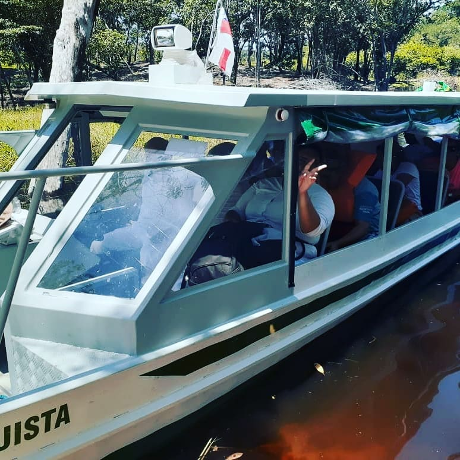

A organização não governamental INSTITUTO FILHOS DA AMAZONIA é um instituição social genuinamente amazonense.
CONHECENDO E APRENDENDO COM O INSTITUTO FILHOS DA AMAZONIA
A Organização Não Governamental INSTITUTO FILHOS DA AMAZÔNIA é uma Instituição Social genuinamente amazonense, sem quaisquer vínculos ou influência de instituições internacionais e governamentais, ao contrário de muitas ONGs que atuam na Amazônia. Por outro lado, como a sigla ONG define, somos NÃO GOVERNAMENTAIS, não tendo nenhum vínculo com governos municipal, estadual e federal. Aqui, destacamos que muitas instituições chamadas de ONG, na verdade não o são, por que atuam dentro de órgãos governamentais, como na SEMA do Amazonas, na FUNAI e no IBAMA. Seriam então “OGs” e não ONGs. Filhos da Amazônia pretende ser e continuar sendo uma ONG raíz, focando nos principais problemas ambientais e sociais da Amazônia, notadamente no Estado do Amazonas.
